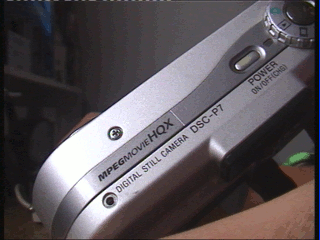

Alex Test Site!!! wow
Hi
there, this is a just a test site to see how well I can create a
webpage and all of that. I don't really know what else to write here,
so yeah lmao
As
you can see above, that is the composite output from a Sony DSC-P7
Cybershot camera. Unfortunately when I last tried to use it, the lens
assembly seemed to be faulty, meaning it doesn't seem to open at all :(
would be nice to get it working (somehow) in the future.

But
yeah, I am using an application called KompoZer under Windows XP on a
HP Compaq dc5700 Microtower to make this page. This could be a good
option to use for making a Web 1.0 styled website, but I may try out
some other solutions to see what works best for me in this case.
Anyways, thanks for reading this! lol
Made by Alex T on 10th May 2021